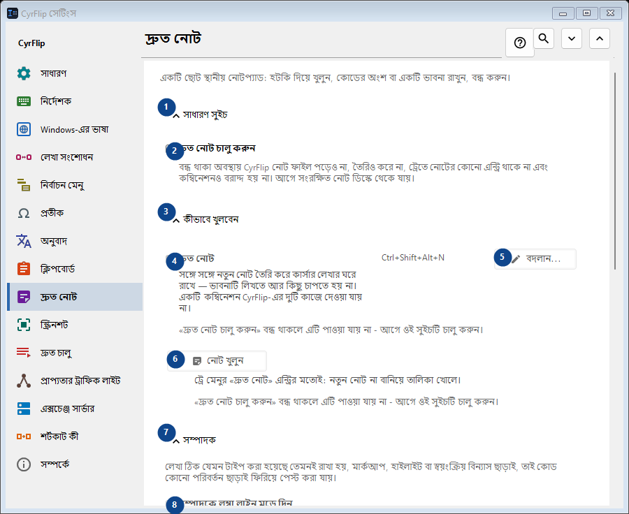
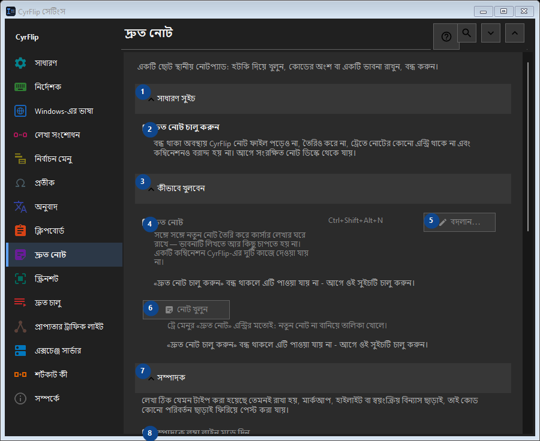

দ্রুত নোট
এর কাজ
একটি ছোট স্থানীয় নোটপ্যাড: হটকি দিয়ে খুলুন, কোডের অংশ বা একটি ভাবনা রাখুন, বন্ধ করুন।


ব্যবহারের ক্রম
সেটিং সঙ্গে সঙ্গে প্রয়োগ হয়। নির্দিষ্ট ক্রম নেই; নিচের দলগুলি ব্যবহার করুন।
উপাদান
1. সাধারণ সুইচ
উল্লিখিত কাজের জন্য এই নির্দেশ ব্যবহার করুন। মেনে নেওয়ার আগে নিশ্চিতকরণ পড়ুন।
আপনার শর্টকাট2. দ্রুত নোট চালু করুন
বন্ধ থাকা অবস্থায় CyrFlip নোট ফাইল পড়েও না, তৈরিও করে না, ট্রেতে নোটের কোনো এন্ট্রি থাকে না এবং কম্বিনেশনও বরাদ্দ হয় না। আগে সংরক্ষিত নোট ডিস্কে থেকে যায়।
আপনার শর্টকাট3. কীভাবে খুলবেন
উল্লিখিত কাজের জন্য এই নির্দেশ ব্যবহার করুন। মেনে নেওয়ার আগে নিশ্চিতকরণ পড়ুন।
আপনার শর্টকাট4. দ্রুত নোট
«দ্রুত নোট চালু করুন» বন্ধ থাকলে এটি পাওয়া যায় না - আগে ওই সুইচটি চালু করুন। এই উপাদান এখন উপলব্ধ নয়। আগে বৈশিষ্ট্য চালু করুন বা একটি এন্ট্রি বাছুন।
আপনার শর্টকাট5. বদলান - দ্রুত নোট
«দ্রুত নোট চালু করুন» বন্ধ থাকলে এটি পাওয়া যায় না - আগে ওই সুইচটি চালু করুন। এই উপাদান এখন উপলব্ধ নয়। আগে বৈশিষ্ট্য চালু করুন বা একটি এন্ট্রি বাছুন।
আপনার শর্টকাট6. নোট খুলুন
«দ্রুত নোট চালু করুন» বন্ধ থাকলে এটি পাওয়া যায় না - আগে ওই সুইচটি চালু করুন। এই উপাদান এখন উপলব্ধ নয়। আগে বৈশিষ্ট্য চালু করুন বা একটি এন্ট্রি বাছুন।
আপনার শর্টকাট7. সম্পাদক
উল্লিখিত কাজের জন্য এই নির্দেশ ব্যবহার করুন। মেনে নেওয়ার আগে নিশ্চিতকরণ পড়ুন।
আপনার শর্টকাট8. সম্পাদকে লম্বা লাইন মুড়ে দিন
«দ্রুত নোট চালু করুন» বন্ধ থাকলে এটি পাওয়া যায় না - আগে ওই সুইচটি চালু করুন। এই উপাদান এখন উপলব্ধ নয়। আগে বৈশিষ্ট্য চালু করুন বা একটি এন্ট্রি বাছুন।
আপনার শর্টকাট9. রপ্তানি ও সংরক্ষণ
উল্লিখিত কাজের জন্য এই নির্দেশ ব্যবহার করুন। মেনে নেওয়ার আগে নিশ্চিতকরণ পড়ুন।
আপনার শর্টকাট10. রপ্তানির সময় তারিখ যোগ করুন
«দ্রুত নোট চালু করুন» বন্ধ থাকলে এটি পাওয়া যায় না - আগে ওই সুইচটি চালু করুন। এই উপাদান এখন উপলব্ধ নয়। আগে বৈশিষ্ট্য চালু করুন বা একটি এন্ট্রি বাছুন।
আপনার শর্টকাট11. সব নোট Markdown-এ রপ্তানি করুন...
«দ্রুত নোট চালু করুন» বন্ধ থাকলে এটি পাওয়া যায় না - আগে ওই সুইচটি চালু করুন। এই উপাদান এখন উপলব্ধ নয়। আগে বৈশিষ্ট্য চালু করুন বা একটি এন্ট্রি বাছুন।
আপনার শর্টকাট12. সব দ্রুত নোট মুছুন
«দ্রুত নোট চালু করুন» বন্ধ থাকলে এটি পাওয়া যায় না - আগে ওই সুইচটি চালু করুন। এই উপাদান এখন উপলব্ধ নয়। আগে বৈশিষ্ট্য চালু করুন বা একটি এন্ট্রি বাছুন।
আপনার শর্টকাট13. অন্য কম্পিউটারে স্থানান্তর
উল্লিখিত কাজের জন্য এই নির্দেশ ব্যবহার করুন। মেনে নেওয়ার আগে নিশ্চিতকরণ পড়ুন।
আপনার শর্টকাট14. রপ্তানি করুন...
আপনার নোট ও বেছে নেওয়া ক্লিপবোর্ড ইতিহাস নিয়ে একটি খোলা টেক্সট ফাইল: যেকোনো এডিটরে বা ফোনে পড়া যায় এবং অন্য কম্পিউটারে CyrFlip-এ আমদানি করা যায়। ফাইলটি এনক্রিপ্ট করা হয় না। আমদানি দেখায় কী যোগ হবে এবং কিছুই মোছে না।
আপনার শর্টকাট15. আমদানি করুন...
উল্লিখিত কাজের জন্য এই নির্দেশ ব্যবহার করুন। মেনে নেওয়ার আগে নিশ্চিতকরণ পড়ুন।
আপনার শর্টকাট